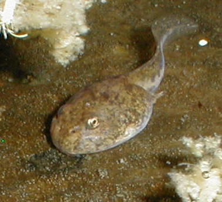
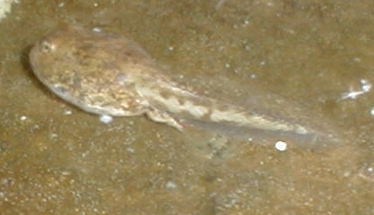

The Sonoran Desert Toad
HOME
Bufo alvarius
 
These tadpoles were in a pond with a group of slightly older hatchlings. The little developing toad next to the tadpole is missing a hind leg.
 The Sonoran Desert ToadThe Sonoran Desert Toad
The Sonoran Desert ToadThe Sonoran Desert Toad